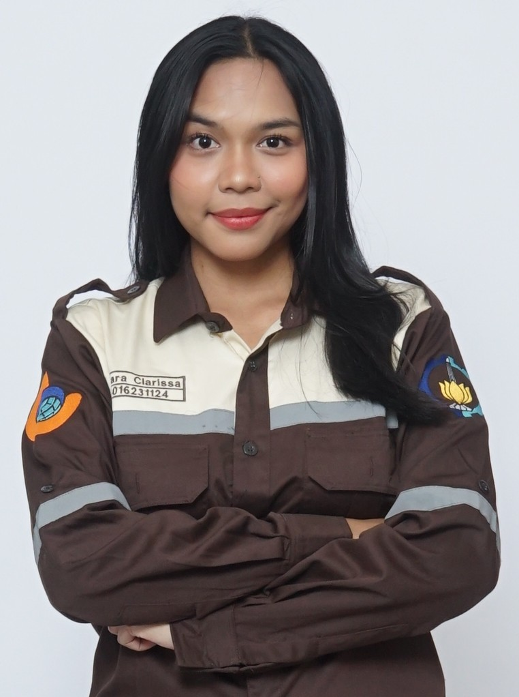

Tentang SiRuBi
Tentang Kami

Tim Pengembang SiRuBi



SiRuBi (Sistem Informasi Rute dan Halte Bus Sekolah) adalah sebuah platform aplikasi pemetaan digital (WebGIS) komprehensif yang dirancang untuk memfasilitasi kebutuhan transportasi pelajar di bawah naungan Dinas Perhubungan Kota Surabaya.
Aplikasi ini mendigitalkan dan menampilkan secara interaktif jaringan halte, lokasi sekolah yang dilewati, serta jalur lalu lintas bus sekolah secara aktual. Melalui integrasi peta canggih, siswa dan orang tua dapat dengan mudah merencanakan perjalanan mereka, menemukan halte terdekat, hingga melihat arah rute operasional bus sekolah yang ada.
Misi utama dari pengembangan SiRuBi ini adalah untuk meningkatkan aksesibilitas, keamanan, serta minat pelajar Surabaya dalam menggunakan fasilitas kendaraan umum khusus sekolah. Dengan demikian, diharapkan hal ini turut berperan dalam mengurangi angka kemacetan lalu lintas kota dan membantu menciptakan lingkungan yang lebih hijau.